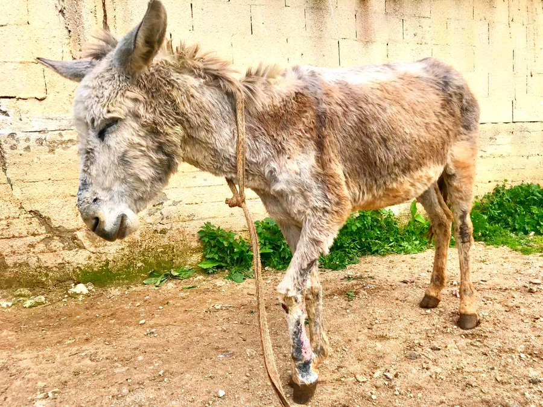
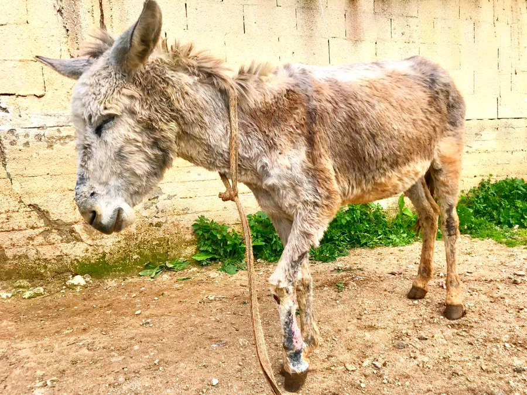

Adopt
Adoption Guidelines
Thank you for considering adoption! To ensure a successful adoption experience, please review our guidelines below:
1. Application Process
Complete an Adoption Application: Fill out the application form to help us understand your suitability as a pet owner.
Submit a Home Visit Request: A home visit may be required to verify that your home is a safe environment for the pet.
Provide References: Personal and veterinary references may be requested to assess your experience and readiness for pet ownership.
2. Adoption Fees
Pay an Adoption Fee: The adoption fee covers medical expenses and is specified on the pet’s profile page.
3. Health and Medical Care
Veterinary Care: All pets are up-to-date on vaccinations and have been spayed or neutered. Continue regular vet visits for your new pet.
Health Records: You will receive the pet’s health records upon adoption.
4. Pet Care Responsibilities
Commit to Long-Term Care: Adopting a pet is a lifelong responsibility. Make sure you can provide care for the pet’s entire life.
Daily Needs: Pets need daily feeding, exercise, grooming, and attention.
5. Safe Environment
Pet-Proof Your Home: Ensure your home is safe for the pet by removing hazards and securing the environment.
Safe Outdoor Access: Ensure your yard is secure and be aware of local leash laws.
6. Training and Socialization
Provide Training: Basic obedience training is essential. Consider enrolling in a training class.
Socialization: Gradually introduce the pet to new experiences and social interactions.
7. Return Policy
Return Policy: If you cannot keep the pet, contact us to discuss returning the pet to our organization.
8. Adoption Agreement
Sign an Adoption Agreement: This agreement outlines your responsibilities and our commitment to support you.
9. Follow-Up
Post-Adoption Follow-Up: We may follow up to check on the pet’s well-being and offer support.
10. No Impulse Decisions
Avoid Impulse Adoptions: Make sure you are ready for pet ownership and take your time to make a decision.

 
